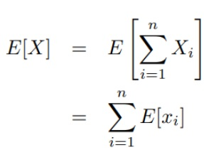
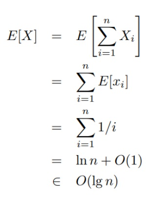

Hiring Assistant Problem, hay nói cách dân dã là "Vấn đề Tuyển dụng trợ lý" là một trong những bài toán điển hình liên quan đến ứng dụng của Probability(xác suất) trong cuộc sống. Nó có nhiều ứng dụng đến nỗi tôi đã từng bất ngờ khi lần đầu đọc chúng, và cũng chính là nguồn cảm hứng cho tôi tìm hiểu về các thuật toán liên quan đến Probability.
Trong bài viết này, ta sẽ nói về ý tưởng căn bản của bài toán, chứng minh toán học, ý tưởng phát triển, và ứng dụng thực tế của bài toán.
Với nội dung căn bản của bài toán, ta có thể nêu ngắn gọn như sau: Cần thuê nhân viên bằng cách sau:
- Bộ phận tuyển dụng HR sẽ gửi 1 ứng viên mỗi ngày đến phỏng vấn
- Phỏng vấn người này, có thể thuê hoặc không thuê
- Luôn luôn thuê người tốt nhất (tức giỏi hơn người phỏng vấn trước!)
Như đã nói ở ngay phần trên, với 3 ý chính của việc thuê nhân viên như vậy, thuật toán có thể nêu dưới dạng mã giả đơn giản như sau:
HIRE-ASSISTANT(n) best <-- 0
for i <-- 1 to n do
if candidate[i] is better than candidate[best]
best <-- i
hire candidate
Với mã giả như trên, dễ dàng thấy được thuật toán sẽ lặp lại việc thuê các ứng viên tốt hơn những ứng viên đã thuê. Có thể sa thải hoặc không sa thải người cũ. Xét đến chi phí tuyển dụng của chúng ta, sẽ có các loại chi phí (COST) như sau:
- COST phỏng vấn ứng viên: Ci, COST tuyển dụng nhân viên: Ch
- Khi đó, với n ứng viên phỏng vấn và m ứng viên được thuê, tổng chi phí sẽ là COST = O(n*Ci + m*Ch)
- Dễ thấy, với Best case (người tốt nhất ta thuê được ngay lần đầu, những lần sau không PV được người tốt hơn nên không cần thuê), ta có COST_BEST = O(n*Ci + Ch)
- Với Worst case (dãy người phỏng vấn xếp theo thứ tự trình độ tăng dần), ta có COST_WORST = O(n*Ci + n*Ch)
Tuyệt vời! Chúng ta đã mô tả rõ bài toán, các trường hợp BEST, WORST nếu ta thuê theo cách này. Bây giờ đến vấn đề quan trọng: Liệu rằng có thuê nhân viên bằng cách này được không? Trong trường hợp bình thường, thì kỳ vọng chúng ta cần phải thuê bao nhiêu người trong tổng số người phỏng vấn? Nói cách khác, giả sử có 100 người phỏng vấn, nếu ta thuê theo cách đó sẽ thuê được bao nhiêu người? Có nhiều quá không? Số lượng có hợp lý không?
Ta gọi BIẾN NGẪU NHIÊN Xi với Xi = 1 nếu nhân viên i được thuê, Xi = 0 nếu nhân viên i không được thuê
Vậy, tổng số nhân viên được thuê là: X = X1 + X2 + ... + Xn. Từ đó suy ra kỳ vọng số nhân viên được thuê sẽ là:
Thực ra, trong i người, ứng viên i nếu được thuê thì đồng nghĩa với việc ứng viên đó tốt nhất trong i người. Việc một ứng viên là tốt nhất trong i ứng viên có xác suất là 1/i. Vì vậy:
Chúng ta đã tính được kết quả! Đó chính là kỳ vọng số ứng viên được thuê. Để bạn hiểu rõ kết quả này hơn, ta sẽ thay giá trị thực vào. Với 100 ứng viên, tức n = 100, thì kỳ vọng số ứng viên được thuê sẽ là 5 người! Rất tuyệt vời. Bạn tưởng tượng công ty bạn phỏng vấn được 100 ứng viên, đủ nhiều để bao gồm các ứng viên tốt, và thuê được số lượng ứng viên là 5 người được coi là giỏi nhất! Congratulation!
Tuy nhiên, còn một vấn đề nhỏ ở đây là Liệu các ứng viên có thực sự là ngẫu nhiên? Hay có sự sắp xếp, ví dụ con ông A con bà B sẽ được vào trước tăng tỷ lệ được tuyển? Với vấn đề này, có thể giải quyết dễ dàng bằng cách xáo trộn các hồ sơ thứ tự của các ứng viên. Khi đó dãy ứng viên sẽ được coi là ngẫu nhiên. Còn xáo trộn bằng cách nào? Có 2 cách hiệu quả là hoán vị dựa trên độ ưu tiên, hoặc dựa trên tổng số ứng viên. Để tìm hiểu thêm, bạn có thể đọc tài liệu của tôi viết đính kèm phía dưới!
Thực ra, với chiến thuật thuê nhân viên kiểu này, còn tồn tại một vấn đề KHÁ LỚN!, vấn đề này tôi sẽ nói ngay sau phần ứng dụng dưới đây!
Ứng dụng đầu tiên là với các công ty, vâng, đây là cách rất hay để thuê ứng viên! Họ chỉ cần 1 tập CV ứng viên, xáo trộn ngẫu nhiên, rồi mỗi ngày phỏng vấn 1 ứng viên, thuê người tốt nhất trong số người đã phỏng vấn (giả sử việc thuê cần quyết định ngay sau khi phỏng vấn) ! Khi đó, kỳ vọng là với mỗi 100 ứng viên sẽ thuê được 5 ứng viên tiềm năng!
Một ứng dụng nữa tôi có thể chỉ ra cho bạn là việc ứng dụng trong các mô hình học máy - MACHINE LEARNING! Bạn có 1 tập các mô hình có thể áp dụng trong 1 bài toán, việc bạn xáo trộn, thử nghiệm và tìm mô hình tốt hơn sẽ khiến bạn chỉ cần đánh giá cụ thể nhất 5 mô hình tiềm năng trong 100 mô hình! Đây chính là hiệu quả của các thuật toán liên quan đến xác suất, mặc dù độ chính xác không phải 100% nhưng who cares? Machine Learning bản chất đã là Probability rồi!
Một vấn đề rất to lớn là: Nếu công ty tôi là GOOGLE và tôi cần tìm một người GIỎI NHẤT trong hàng nghìn ứng viên cho 1 vị trí, tôi sẽ làm gì?
Hay nói cách khác, đó chính là tối ưu chiến thuật tìm ra 1 ứng viên tốt nhất! Chúng ta có một tập ứng cử viên, chúng ta chỉ cần tìm người tốt nhất, và việc thuê/ không thuê cần trả lời ngay sau phỏng vấn. Tức nếu ta coi ứng viên đó là người ta thuê, thì việc phỏng vấn sẽ kết thúc và sẽ không phỏng vấn người sau!
Nó khác với thuật toán trên ở chỗ: Nếu thuật toán trên ta phỏng vấn hết 100 ứng viên với kỳ vọng thuê được 5 người, thì dưới này, ta chỉ được thuê 1 trong 100 ứng viên, và việc phỏng vấn sẽ kết thúc ngay sau khi ta thuê ứng viên đó. Ví dụ, nếu ta thuê ngay ứng viên đầu, thì ta sẽ không phỏng vấn tiếp 99 ứng viên còn lại! Và tỷ lệ rất cao là người tốt nhất sẽ nằm trong 99 ứng viên còn lại chứ không phải người ta chọn. Vậy, ta sẽ sử dụng thuật toán xác suất ở đây như thế nào?
Đón đọc phần 2 của Hiring Assistant Problem nhé!
FILE ĐÍNH KÈM: TIỂU LUẬN CỦA TÔI VỀ HIRING ASSISTANT PROBLEM